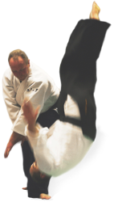

Les horaires
Enfants (de 8 à 12 ans)
MARDI et JEUDI - 17h30 à 18h20
Un ou deux cours par semaine, c'est au choix !
Adolescents (de 13 à 18 ans)
MARDI et JEUDI - 18h30 à 19h30
Le samedi, pratique conjointe avec les adultes (conseillé)
Adultes
MARDI et JEUDI - 19h45 à 21h30
À partir de novembre : une partie des cours sera consacrée à la pratique des armes (environ 30min)
SAMEDI - 17h00 à 19h00
Les cours de samedi ont lieu du 01 octobre au 31 mai. Ils sont dirigés par le plus gradé du club.
Actualités
Fermeture estivale
Le dojo est fermé pendant Juillet et Août
- Reprise adultes le 04/09 à 19h45
- Reprise ados le 11/09 à 18h30
- Reprise enfants le 16/09 à 17h30
Stages à venir